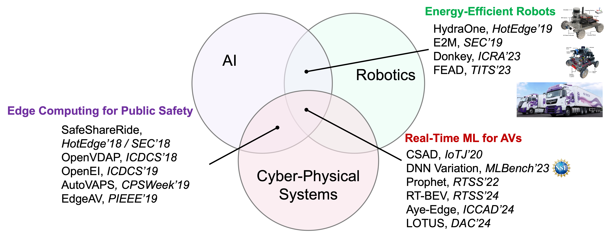

Research
Research Objective
My research vision is to develop real-time cyber-physical systems that enhance autonomy, efficiency, and safety in transportation and robotics. By integrating cyber-physical systems, real-time processing, and edge computing, I aim to create robust and scalable solutions to address the challenges of autonomous driving and intelligent transportation. My goal is to bridge the gap between theory and practice, ensuring that advanced transportation systems are both innovative and reliable in real-world applications.

1. Predictable Perception for AVs
Autonomous vehicles depend on sensors and deep neural networks (DNNs) to perceive their environment in real time. Ensuring predictability in the perception pipeline is challenging. My prior work spans comprehensive profiling of DNN inference time variations and novel systems to guarantee predictable perception.

DNN Inference Time Variations Profiling
We built a reconfigurable testbed for fine-grained profiling of DNN inference and analyzed time variations across six dimensions: data, I/O, model, runtime, hardware, and end-to-end pipeline. This effort yielded six key insights and informed an NSF grant on multi-tenant DNN timing.
Prophet
Prophet addresses inference time variations in multi-tenant DNNs through a two-stage approach: predicting variability from intermediate outputs (e.g., proposals, raw points) and coordinating concurrent models to align their execution progress. Demonstrated on KITTI, Prophet reduces timing jitter for safety-critical perception (IEEE RTSS 2022).
PP-DNN
Predictable Perception with DNNs (PP-DNN) dynamically selects critical frames and regions of interest (ROIs) based on scene context and frame similarity. An ROI generator and FLOPs predictor guide an ROI scheduler across multiple models, with a detection predictor for non-critical frames. Implemented in ROS and evaluated on BDD100K and nuScenes, PP-DNN significantly improves timing predictability (Under review: RTAS 2025).
RT-BEV
RT-BEV co-optimizes message communication and object detection for real-time Bird’s-Eye-View perception. Key components include an ROI-aware camera synchronizer, context-aware ROI generator, feature split & merge for variable ROI sizes, a time predictor, and a global coordinator. Implemented in a ROS BEV pipeline and validated on nuScenes, RT-BEV delivers low-latency, high-accuracy BEV perception (IEEE RTSS 2024).
AyE-Edge
AyE-Edge automates algorithm–device deployment for accurate, power-efficient real-time object detection on edge devices. Through joint exploration of keyframe selection, CPU–GPU configuration, and model pruning, AyE-Edge achieves up to 96.7% power reduction in real-world mobile experiments (ICCAD 2024).
2. Energy-Efficient Autonomous Systems
Energy efficiency is critical for mobile robots and heavy-duty trucks. We built platforms and middleware to coordinate perception, planning, control, and hardware for power savings.

E2M
E2M is an energy-efficient middleware that regulates sensor data access, adjusts process execution periods, and coordinates concurrent jobs to maximize hardware sleep time. On the HydraOne testbed, E2M achieves 24% computing energy savings, translating to 11.5% more battery life and 14 extra minutes of runtime with minimal performance loss (ACM/IEEE SEC 2019).
Energy-Efficient Path Planning for AMRs
Using the Donkey platform’s power profiling, we developed a real-time energy prediction model and path planning strategies. Our approach delivers >90% prediction accuracy and up to 44.8% energy savings in obstacle avoidance (ICRA 2023).
pNav
pNav jointly optimizes physical and cyber subsystems of AMRs through millisecond-level power prediction, spatial/temporal locality modeling, and dynamic coordination of software and hardware configurations. Prototyped in ROS with Donkey, pNav achieves >96% prediction accuracy and 38.1% power reduction without compromising safety (Under review: EuroSys 2025).
FEAD
Fuel-Efficient Autonomous Driving (FEAD) uses engine management and Instant Fuel Meter data collected over three months to train and compare seven fuel-rate prediction models. Deployments on Inceptio trucks demonstrate 7% fuel savings versus human drivers (IEEE TITS 2023).
3. Vehicular Edge Computing for Public Safety
Connected and Autonomous Vehicles (CAVs) require robust computing and communication testbeds. My work spans vehicle-scale testbeds and edge-driven safety systems.


Hydra AV Testbed
At Wayne State University, we built Hydra, a level-4 autonomous vehicle on NVIDIA Drive PX2 with six cameras, six radars, one LiDAR, GNSS, DSRC, and a drive-by-wire actuator system. A dedicated power distribution system supports the computing stack.
Vehicular Communication Comparison
Integrating the Equinox roadside unit and HydraOne testbed, we benchmarked WiFi, LTE, and DSRC for latency, power, and utilization, guiding CAV communication design (USENIX HotEdge 2020).
SafeShareRide
SafeShareRide is an edge-enabled ride-sharing safety system with three stages: speech recognition, driving behavior detection, and video capture/analysis. Abnormal events trigger edge video compression and cloud analysis. Implemented on smartphones, SafeShareRide won publications at USENIX HotEdge 2018 and ACM/IEEE SEC 2018.